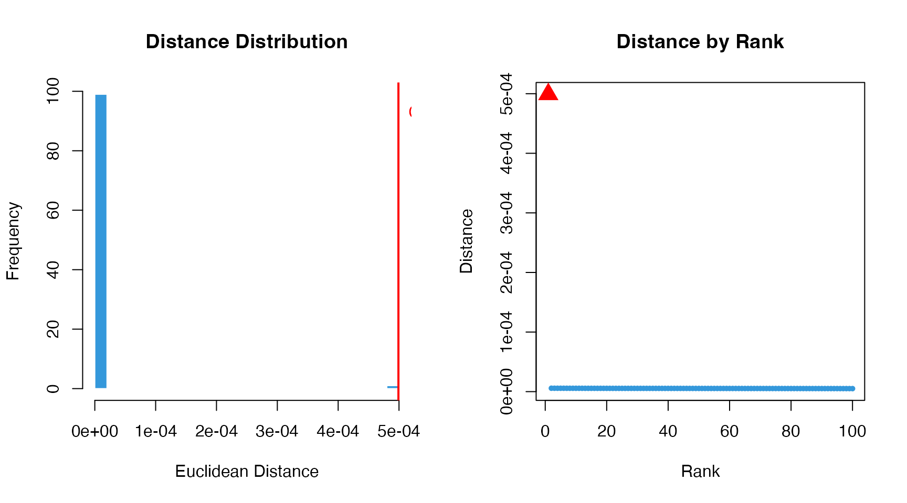
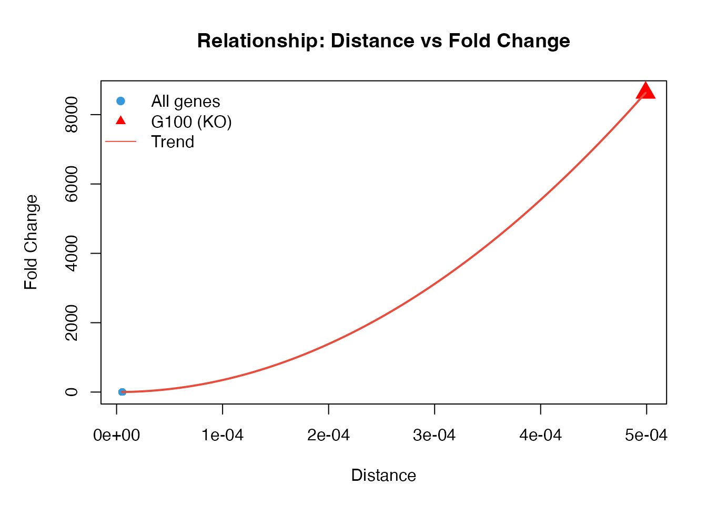
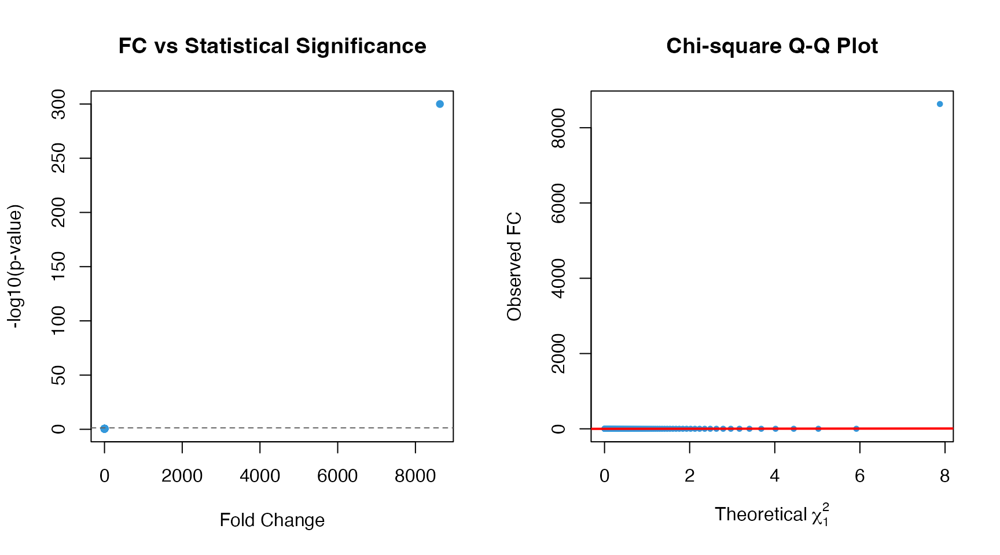
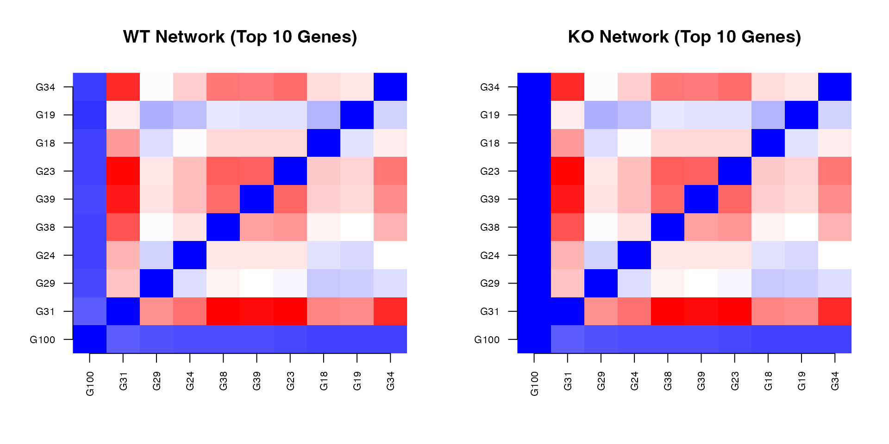
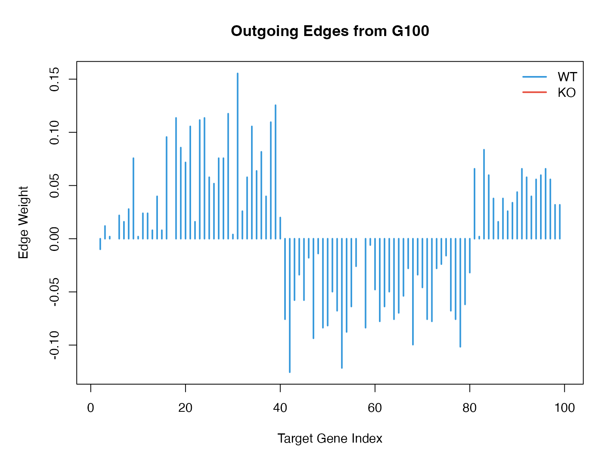
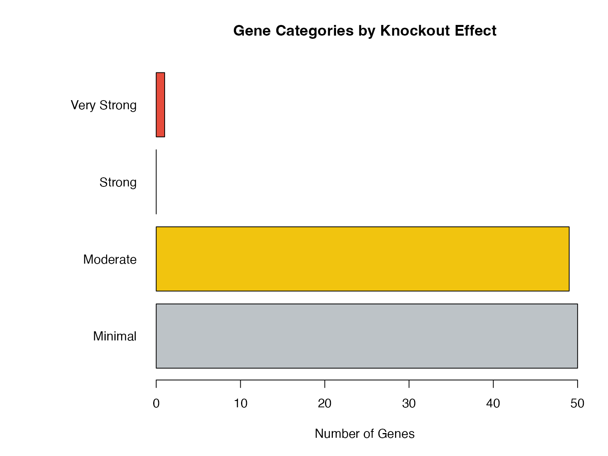

Result Interpretation Guide
Zaoqu Liu
2026-01-23
Source:vignettes/interpretation.Rmd
interpretation.RmdIntroduction
This guide helps you interpret the results from scTenifoldKnk analysis. Understanding what each output component means is crucial for biological interpretation.
Run Analysis
library(scTenifoldKnk)
library(Matrix)
data_path <- system.file("single-cell/example.csv", package = "scTenifoldKnk")
scRNAseq <- as.matrix(read.csv(data_path, row.names = 1))
result <- scTenifoldKnk(
countMatrix = scRNAseq,
gKO = "G100",
qc_minLSize = 0,
nc_nNet = 5,
nc_nCells = 100,
verbose = FALSE
)Output Structure
# View output structure
str(result, max.level = 2)
#> List of 3
#> $ tensorNetworks :List of 2
#> ..$ WT:Formal class 'dgCMatrix' [package "Matrix"] with 6 slots
#> ..$ KO:Formal class 'dgCMatrix' [package "Matrix"] with 6 slots
#> $ manifoldAlignment: num [1:200, 1:2] -0.000319 -0.001996 -0.003614 -0.001457 -0.010918 ...
#> ..- attr(*, "dimnames")=List of 2
#> $ diffRegulation :'data.frame': 100 obs. of 6 variables:
#> ..$ gene : chr [1:100] "G100" "G31" "G29" "G24" ...
#> ..$ distance: num [1:100] 4.99e-04 5.72e-06 5.68e-06 5.67e-06 5.66e-06 ...
#> ..$ Z : num [1:100] -8.467 -0.94 -0.847 -0.821 -0.791 ...
#> ..$ FC : num [1:100] 8629.87 1.13 1.12 1.11 1.11 ...
#> ..$ p.value : num [1:100] 0 0.287 0.29 0.291 0.292 ...
#> ..$ p.adj : num [1:100] 0 0.346 0.346 0.346 0.346 ...The output contains four main components:
- tensorNetworks$WT: Wild-type gene regulatory network
-
tensorNetworks$KO: Knockout gene regulatory
network
- manifoldAlignment: Low-dimensional embedding of genes
- diffRegulation: Differential regulation statistics
Understanding the Differential Regulation Table
dr <- result$diffRegulation
knitr::kable(head(dr, 10), digits = 4,
caption = "Top 10 Differentially Regulated Genes")| gene | distance | Z | FC | p.value | p.adj | |
|---|---|---|---|---|---|---|
| G100 | G100 | 5e-04 | -8.4673 | 8629.8672 | 0.0000 | 0.0000 |
| G31 | G31 | 0e+00 | -0.9401 | 1.1321 | 0.2873 | 0.3455 |
| G29 | G29 | 0e+00 | -0.8468 | 1.1182 | 0.2903 | 0.3455 |
| G24 | G24 | 0e+00 | -0.8212 | 1.1145 | 0.2911 | 0.3455 |
| G38 | G38 | 0e+00 | -0.7912 | 1.1101 | 0.2921 | 0.3455 |
| G39 | G39 | 0e+00 | -0.7849 | 1.1092 | 0.2923 | 0.3455 |
| G23 | G23 | 0e+00 | -0.7263 | 1.1008 | 0.2941 | 0.3455 |
| G18 | G18 | 0e+00 | -0.7072 | 1.0981 | 0.2947 | 0.3455 |
| G19 | G19 | 0e+00 | -0.6893 | 1.0956 | 0.2952 | 0.3455 |
| G34 | G34 | 0e+00 | -0.6667 | 1.0924 | 0.2959 | 0.3455 |
Column Descriptions
| Column | Description | Interpretation |
|---|---|---|
| gene | Gene name | Gene identifier |
| distance | Euclidean distance | Higher = more affected by knockout |
| Z | Z-score | Standardized distance |
| FC | Fold Change | Ratio of gene’s impact to background |
| p.value | Raw p-value | Statistical significance |
| p.adj | Adjusted p-value | FDR-corrected significance |
Key Metrics Explained
Distance
The distance measures how much a gene’s regulatory profile changes after knockout:
par(mfrow = c(1, 2))
# Distance distribution
hist(dr$distance, breaks = 30, col = "#3498DB", border = "white",
main = "Distance Distribution",
xlab = "Euclidean Distance")
# Highlight knockout gene
ko_dist <- dr$distance[dr$gene == "G100"]
abline(v = ko_dist, col = "red", lwd = 2)
text(ko_dist, par("usr")[4] * 0.9, "G100", pos = 4, col = "red")
# Distance vs Rank
plot(1:nrow(dr), dr$distance,
pch = 19, col = "#3498DB", cex = 0.6,
xlab = "Rank", ylab = "Distance",
main = "Distance by Rank")
points(which(dr$gene == "G100"), ko_dist, pch = 17, col = "red", cex = 2)
Interpretation: - The knockout gene (G100) should have the highest distance - Genes with high distances are most affected by the knockout - These may be direct targets or closely connected in the network
Fold Change (FC)
FC measures how unusual a gene’s distance is compared to the background:
# FC distribution
par(mar = c(5, 5, 4, 2))
plot(dr$distance, dr$FC,
pch = 19, col = "#3498DB", cex = 0.8,
xlab = "Distance", ylab = "Fold Change",
main = "Relationship: Distance vs Fold Change")
# The knockout gene
points(dr$distance[dr$gene == "G100"], dr$FC[dr$gene == "G100"],
pch = 17, col = "red", cex = 2)
# Add trend
fit <- lm(FC ~ poly(distance, 2), data = dr)
x_seq <- seq(min(dr$distance), max(dr$distance), length.out = 100)
lines(x_seq, predict(fit, data.frame(distance = x_seq)),
col = "#E74C3C", lwd = 2)
legend("topleft", c("All genes", "G100 (KO)", "Trend"),
pch = c(19, 17, NA), lty = c(NA, NA, 1),
col = c("#3498DB", "red", "#E74C3C"), bty = "n")
Interpretation: - FC > 1: Gene is more affected than average - FC >> 1: Gene is strongly affected - The knockout gene typically has the highest FC
Statistical Significance
P-values are calculated using chi-square distribution:
par(mfrow = c(1, 2))
# P-value vs FC
plot(dr$FC, -log10(dr$p.value + 1e-300),
pch = 19, col = "#3498DB", cex = 0.8,
xlab = "Fold Change", ylab = "-log10(p-value)",
main = "FC vs Statistical Significance")
abline(h = -log10(0.05), lty = 2, col = "gray40")
# Q-Q plot for chi-square
theoretical <- qchisq(ppoints(nrow(dr)), df = 1)
observed <- sort(dr$FC)
plot(theoretical, observed,
pch = 19, col = "#3498DB", cex = 0.6,
xlab = expression(Theoretical~chi[1]^2),
ylab = "Observed FC",
main = "Chi-square Q-Q Plot")
abline(0, 1, col = "red", lwd = 2)
Interpreting the Gene Regulatory Networks
Network Comparison
WT <- as.matrix(result$tensorNetworks$WT)
KO <- as.matrix(result$tensorNetworks$KO)
# Focus on top affected genes
top_genes <- head(dr$gene, 10)
par(mfrow = c(1, 2))
# WT network subset
WT_sub <- WT[top_genes, top_genes]
image(1:10, 1:10, WT_sub,
col = colorRampPalette(c("blue", "white", "red"))(100),
axes = FALSE, main = "WT Network (Top 10 Genes)",
xlab = "", ylab = "")
axis(1, 1:10, top_genes, las = 2, cex.axis = 0.7)
axis(2, 1:10, top_genes, las = 2, cex.axis = 0.7)
# KO network subset
KO_sub <- KO[top_genes, top_genes]
image(1:10, 1:10, KO_sub,
col = colorRampPalette(c("blue", "white", "red"))(100),
axes = FALSE, main = "KO Network (Top 10 Genes)",
xlab = "", ylab = "")
axis(1, 1:10, top_genes, las = 2, cex.axis = 0.7)
axis(2, 1:10, top_genes, las = 2, cex.axis = 0.7)
Knockout Effect on Network
# Compute network changes
diff_net <- WT - KO
# For knockout gene
ko_gene <- "G100"
if (ko_gene %in% rownames(WT)) {
# Outgoing edges (regulatory targets)
out_edges_WT <- WT[ko_gene, ]
out_edges_KO <- KO[ko_gene, ]
# Visualize
par(mar = c(5, 5, 4, 2))
plot(out_edges_WT, type = "h", col = "#3498DB", lwd = 2,
ylim = range(c(out_edges_WT, out_edges_KO)),
xlab = "Target Gene Index", ylab = "Edge Weight",
main = paste("Outgoing Edges from", ko_gene))
points(1:length(out_edges_KO), out_edges_KO,
type = "h", col = "#E74C3C", lwd = 2)
legend("topright", c("WT", "KO"), col = c("#3498DB", "#E74C3C"),
lwd = 2, bty = "n")
cat("Sum of WT outgoing edges:", round(sum(abs(out_edges_WT)), 4), "\n")
cat("Sum of KO outgoing edges:", round(sum(abs(out_edges_KO)), 4), "\n")
}
#> Sum of WT outgoing edges: 5.3745
#> Sum of KO outgoing edges: 0Biological Interpretation Guidelines
Categories of Affected Genes
# Categorize genes
dr$category <- cut(dr$FC,
breaks = c(0, 1, 2, 5, Inf),
labels = c("Minimal", "Moderate", "Strong", "Very Strong"))
# Visualize
par(mar = c(5, 10, 4, 2))
barplot(table(dr$category),
col = c("#BDC3C7", "#F1C40F", "#E67E22", "#E74C3C"),
horiz = TRUE, las = 1,
main = "Gene Categories by Knockout Effect",
xlab = "Number of Genes")
Quality Assessment
Check Knockout Gene Rank
ko_rank <- which(dr$gene == "G100")
cat("Knockout gene (G100) rank:", ko_rank, "\n")
#> Knockout gene (G100) rank: 1
if (ko_rank == 1) {
cat("✓ PASS: Knockout gene is top-ranked (expected behavior)\n")
} else {
cat("⚠ WARNING: Knockout gene is not top-ranked\n")
cat(" This may indicate:\n")
cat(" - Weak regulatory role of the knockout gene\n")
cat(" - Need for parameter adjustment\n")
}
#> <U+2713> PASS: Knockout gene is top-ranked (expected behavior)Network Sparsity Check
WT_sparsity <- 1 - sum(result$tensorNetworks$WT != 0) / prod(dim(result$tensorNetworks$WT))
cat("WT network sparsity:", round(WT_sparsity, 4), "\n")
#> WT network sparsity: 0.0657
if (WT_sparsity > 0.99) {
cat("⚠ Network may be too sparse. Consider lowering q parameter.\n")
} else if (WT_sparsity < 0.8) {
cat("⚠ Network may be too dense. Consider increasing q parameter.\n")
} else {
cat("✓ Network sparsity is in acceptable range.\n")
}
#> <U+26A0> Network may be too dense. Consider increasing q parameter.Significance Distribution
n_sig_005 <- sum(dr$p.adj < 0.05)
n_sig_001 <- sum(dr$p.adj < 0.01)
pct_sig <- round(n_sig_005 / nrow(dr) * 100, 1)
cat("Significant genes (FDR < 0.05):", n_sig_005, "(", pct_sig, "%)\n")
#> Significant genes (FDR < 0.05): 1 ( 1 %)
cat("Significant genes (FDR < 0.01):", n_sig_001, "\n")
#> Significant genes (FDR < 0.01): 1
if (pct_sig > 50) {
cat("⚠ High proportion of significant genes. May indicate strong knockout effect or need for stricter thresholds.\n")
}Exporting Results
# Export differential regulation table
write.csv(dr, "diffRegulation_results.csv", row.names = FALSE)
# Export significant genes only
sig_genes <- dr[dr$p.adj < 0.05, ]
write.csv(sig_genes, "significant_genes.csv", row.names = FALSE)
# Export networks as edge lists
WT_edges <- which(result$tensorNetworks$WT != 0, arr.ind = TRUE)
edge_list <- data.frame(
from = rownames(result$tensorNetworks$WT)[WT_edges[, 1]],
to = colnames(result$tensorNetworks$WT)[WT_edges[, 2]],
weight = result$tensorNetworks$WT[WT_edges]
)
write.csv(edge_list, "WT_network_edges.csv", row.names = FALSE)Summary
When interpreting scTenifoldKnk results:
- Verify that the knockout gene ranks first
- Examine the fold change distribution
- Consider both statistical significance and effect size
- Validate with known biology when possible
- Use appropriate significance thresholds for your application
Session Info
sessionInfo()
#> R version 4.4.0 (2024-04-24)
#> Platform: aarch64-apple-darwin20
#> Running under: macOS 15.6.1
#>
#> Matrix products: default
#> BLAS: /Library/Frameworks/R.framework/Versions/4.4-arm64/Resources/lib/libRblas.0.dylib
#> LAPACK: /Library/Frameworks/R.framework/Versions/4.4-arm64/Resources/lib/libRlapack.dylib; LAPACK version 3.12.0
#>
#> locale:
#> [1] C
#>
#> time zone: Asia/Shanghai
#> tzcode source: internal
#>
#> attached base packages:
#> [1] stats graphics grDevices utils datasets methods base
#>
#> other attached packages:
#> [1] Matrix_1.7-4 scTenifoldKnk_2.1.0
#>
#> loaded via a namespace (and not attached):
#> [1] cli_3.6.5 knitr_1.51 rlang_1.1.7 xfun_0.56
#> [5] otel_0.2.0 textshaping_1.0.4 jsonlite_2.0.0 htmltools_0.5.9
#> [9] ragg_1.5.0 sass_0.4.10 rmarkdown_2.30 grid_4.4.0
#> [13] evaluate_1.0.5 jquerylib_0.1.4 MASS_7.3-65 fastmap_1.2.0
#> [17] yaml_2.3.12 lifecycle_1.0.5 compiler_4.4.0 RSpectra_0.16-2
#> [21] fs_1.6.6 htmlwidgets_1.6.4 Rcpp_1.1.1 lattice_0.22-7
#> [25] systemfonts_1.3.1 digest_0.6.39 R6_2.6.1 parallel_4.4.0
#> [29] bslib_0.9.0 tools_4.4.0 pkgdown_2.1.3 cachem_1.1.0
#> [33] desc_1.4.3